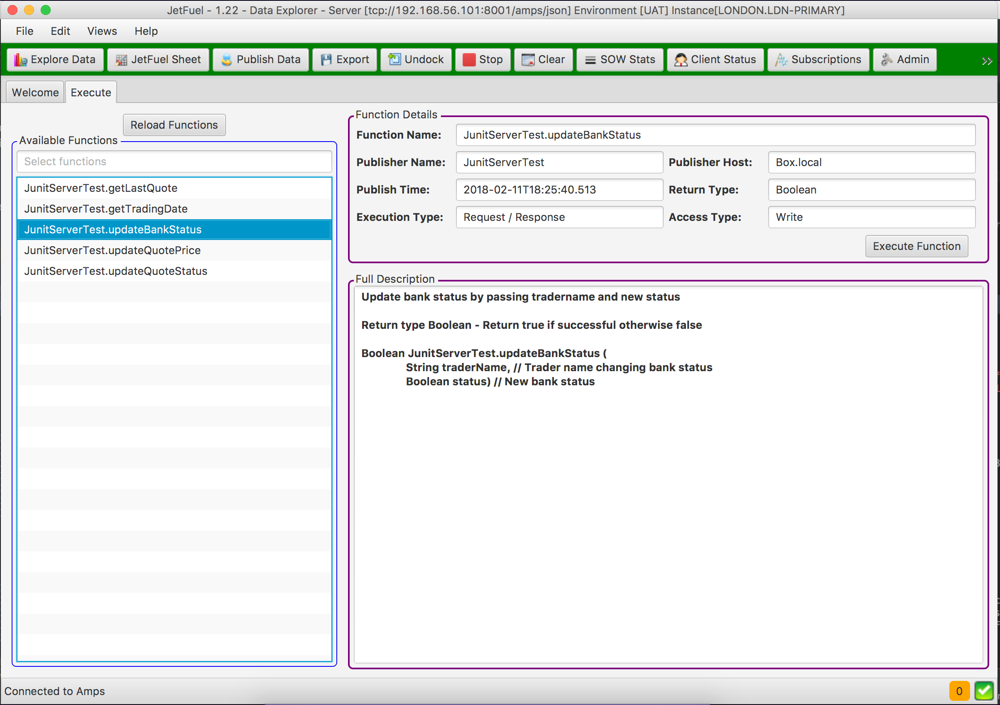

Deepak Dhayatker - (deepakcdo@gmail.com)
Click here to download and Evaluate JetFuel

Below is an example how easily you could publish data from and to JetFuel Bus in four easy steps. Please note a lot more transformation will be available.


This will also allow you to configure and monitor JetFuel Engines. Here you can stop, restart and schedule JetFuel Engines. This provides very powerful ability for efficient system integration.
What is JetFuel?
JetFuel is a tool set that will allow you to get more out of an awesome journaling broker called AMPS. JetFuel has few components that allows users to use the tools straight out of the box. Currenlty JetFuel has three core components and is currently used in one European Investement bank.JetFuel - Explorer
JetFuel Explorer is the first visualization toolset that has been developed. Today it is an excellent query tool which you can use to view data on a AMPS. Click here to see more detailsJetFuel - Execute
This library allows super fast, fully audited Remote Procedure Call (RPC) over a fast journaled bus. Click here to see more details
JetFuel - Engine
This work is currently being planned. This is an Apache camel based components that gives you the ability to import and export data from and to AMPS. Eg loading instrument static data from database, importing prices from Bloomberg, exporting trades to a file for audit etc.Below is an example how easily you could publish data from and to JetFuel Bus in four easy steps. Please note a lot more transformation will be available.
This will also allow you to configure and monitor JetFuel Engines. Here you can stop, restart and schedule JetFuel Engines. This provides very powerful ability for efficient system integration.